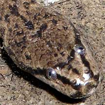
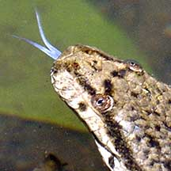
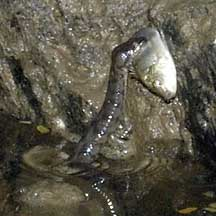
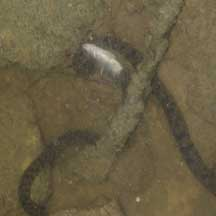
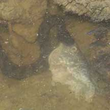
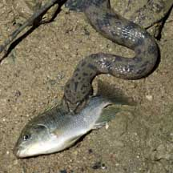
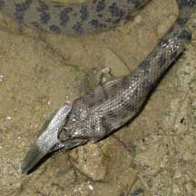
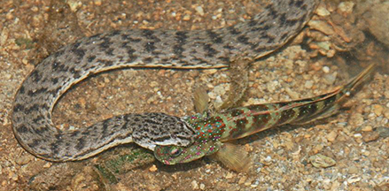

|
|
| snakes text index | photo index |
| Phylum Chordata > Subphylum Vertebrata > Class Reptilia > shore snakes |
| Dog-faced
water snake (Schneider's Bockadam) Cerberus schneiderii Family Homalopsidae updated Oct 2016 Where seen? Although quite commonly seen in our mangroves, this well camouflaged snake is shy and blends in with the mud and the leaf litter. It is more active at night and are usually stays well hidden during the day. It is mainly estuarine and not found in freshwater. According to Baker, in Singapore it is common along our coasts, in mangroves as well as seaward side of canals. It is widely distributed in the Indo-Pacific. It was previously known as Cerberus rynchops. Nick Baker explains the name change on his factsheet about this snake. Features: To about 1m long. Body cylindrical with a 'neck' and a broad head. Grey, brown or olive, it may have dark indistinct patterns. A dark streak passes through the eye to the neck. The snake is adapted for slow-moving, shallow and murky waters. It can swim well. On soft mud, it moves quickly by side-winding. Although it very much at home in the water, it still needs to breathe air. Its eyes and nostrils are at the top of the head so it can peep out of the water and breathe while most of its body remains hidden in the murky water. The snake is mildly venomous but is usually docile. Why 'dog-faced'? It is said that it got its common name for its protruding eyes, which is rather unusual for a snake. Whether this makes the snake look dog-like is somewhat debatable. What does it eat? Mainly fishes. As soon as the sun sets, these snakes come out to hunt. The snake might lie motionless among a tangle of roots, its body in S-shapes, ready to strike out at any suitable prey that wanders nearby. Or it might move about slowly among the mangrove roots, checking out burrows and bolt-holes to see if there is something tasty hiding there. The prey is swallowed whole. They've been seen catching and swallowing rather large fishes. One was seen attempting to swallow a dead fish head. They sometimes also try to steal one another's prey. Dog-faced babies: Mama snake does not lay eggs and instead, gives birth to live young in litters of 8-26. The babies look just like their parents. Sometimes, tiny baby watersnakes might be seen. |
 Sungei Buloh Wetland Reserve, Nov 03  Protruding eyes give it its common name.  Sungei Buloh Wetland Reserve, Nov 03 |
|
 The fish is lifted out of water. Pasir Ris Park, Feb 07 |
 Attempted theft of prey. Pasir Ris Park, Mar 07 |
 Attempting to eat a dead rotten fish head. Pasir Ris Park, Mar 07 |
| Dog-faced water snakes (Schneider's Bockadam) on Singapore shores |
| Photos of Dog-faced water snakes for free download from wildsingapore flickr |
| Distribution in Singapore on this wildsingapore flickr map |
 Swallowing a fish bigger than its head! Pasir Ris Park, Mar 07 |
 Swallowed head first...slowly...slowly. |
 Gulp! |
 Eating a Pink-speckled shrimp-goby. Pulau Semakau, Oct 13 Photo shared by James Koh on flickr. |
| Filmed in 2008
on Pulau Semakau dog-faced water snake@semakau from SgBeachBum on Vimeo. |
| Filmed at Pasir
Ris, Dec 10 dog-faced water snake @ Pasir Ris Mangroves from SgBeachBum on Vimeo. |
Links
|
|
|